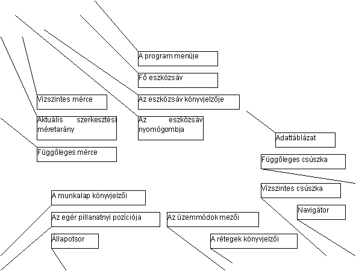
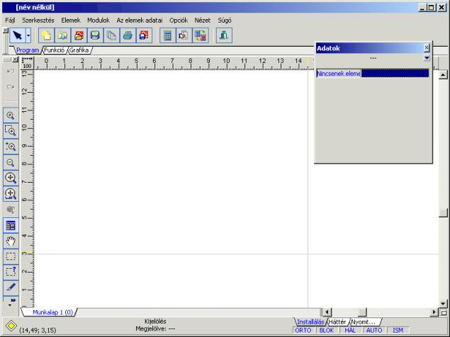
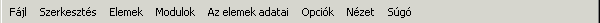
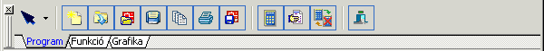
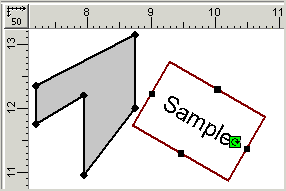
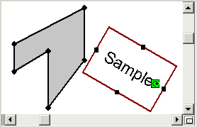
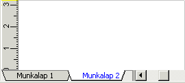

Egy példa képernyõ a programban a következõképpen néz ki:
 
Az egész képernyõt a program fõablaka tölti be. Ehhez társulnak még a kisegítõ ablakok, amelyek a fõablakhoz lehetnek hozzátoldva, és annak részeként funkcionálhatnak, vagy külön ablakként szerepelhetnek a fõablak hátterében. A kisegítõ ablakokhoz tartoznak többek közt a hibák listája, az adatkészletek listája, valamint az eszközsávok. A kisegítõ ablakok lehetnek bekapcsolt, vagy kikapcsolt állapotban, hasonlóan a további eszközsávokhoz (a példán a „Funkciók” sávja a képernyõ bal felsõ részén helyezkedik el). A képernyõ beállításai lehetõségeinek leírása a 7.4.2 fejezetben található.
A képernyõ (fõablak) legfontosabb elemei:
1. A cím:
A fõoldal címében bal oldalt a program megnevezése, és az éppen szerkesztés alatt álló fájl neve szerepel. Ha a fájl neve mellet van egy „*” jel, (csillag), ez azt jelenti, hogy az utolsó mentés óta módosítva lett a fájl (a fenti kép). Jobb oldalt a Windows standard gombjai találhatóak.
2. A program menüje:

A címsáv alatt található a menüsáv. Valamely menünévre való kattintással megjeleníti a hozzá tartozó utasításokat. Ha ebben a kezelési utasításban például a »„Fájl / Mentés másként…” utasítás« megjegyzés szerepel, akkor ki kell választani a „Fájlt” a fõmenübõl, majd a megjelenõ legördülõ menübõl kiválasztani a „Mentés másként” menüpontot.
3. A fõ eszközsáv és az eszközsávok könyvjelzõi:

A fõ eszközsáv néhány könyvjelzõt tartalmaz. Egy kiválasztott könyvjelzõ fülre való kattintással az eszközsáv tartalma megváltozik, és a kiválasztott eszközsáv gombjai válnak hozzáférhetõvé. Egy kiválasztott nyomógombra való kattintással a hozzá társított funkciót, vagy az adott elem behelyezésének üzemmódját tudjuk elindítani. Ha a mutatót csak ráhelyezzük a gombra (kattintás nélkül), a program azt a súgó információt tartalmazó buborékot mutatja meg, amely tartalmazza, hogy a gombhoz milyen funkció, vagy elem van hozzárendelve.
Az eszközök fõsávjának bal oldalán található az a gomb , amely a kijelölõ módba való váltást biztosítja, (ha a program más módban volt, pl.: elemek behelyezése). Ez a gomb mindig látható, függetlenül az eszközsávban kiválasztott aktuális könyvjelzõtõl.
A gomb oldalán található legördülõ menü, amely lehetõvé teszi a munkalap rétegeinek bejárását, és a munkafolyamatok ki- vagy bekapcsolását.
4. Munkaterület vízszintes és függõleges vonalzóval:

Az fenti ábrán munkaterület részlete látható, egy lehetséges rajztöredékkel. A munkaterület felül és bal oldalt vonalzókkal van határolva – egy vízszintessel és egy függõlegessel. A vonalzók lehetõvé teszik a behelyezett elemek pozíciójának folyamatos ellenõrzését. A kurzornak a viszonyítási skálához (vonalzóhoz) mért pozícióját jelzõ elemek egy vízszintes és egy függõleges vonal, amelyek egy sajátos „célkeresztet” alkotnak. A bal felsõ sarokban található gomb a vonalzók közt lehetõvé teszi, hogy megváltoztassuk a nézet méretarányát, és megmutatja a felvett méretarányt (a fenti képen: 1: 50).
5. A függõleges és a vízszintes csúszkák:

A vonalzók által képzett sarokkal szemben helyezkednek el a görgetõsávok: a függõleges, és a vízszintes. A görgetõsávok kétféle módon teszik lehetõvé a rajz látott tartományának megváltoztatását. A görgetõsávon található kis csúszkát megragadva az egérrel lehet mozgatni a grafikus lapot. Alternatívaként, kis elmozdulás eléréséhez a gördítõsávok végein található nyilakra kell kattintani, egy ugrásszerû, nagyobb elmozdulás érdekében pedig a görgetõsáv „sínrészére” kell kattintani. Nagyobb tervek bejárásához pedig az ún. navigátort használhatjuk a képernyõ jobb alsó részén (lásd a 4.4. fejezetet).
6. A terv munkalapjaihoz való hozzáférést biztosító könyvjelzõk:

A munkaterület bal alsó részén, a vízszintes vonalzó mellett, találhatóak a munkaterületek közti váltást biztosító könyvjelzõfülek. Ha nem fér el az összes fül, nyilakkal ellátott gombok jelennek meg a látható könyvjelzõk közötti váltás érdekében. Egy adott könyvjelzõre való kattintással a program az adott terület szerkesztésére, kijelölésére vált. Az aktuális könyvjelzõnek fehér színe van. Kattintással az egér jobb gombjával való bármely címkére, lehetõvé teszi a munkalapok intézõje ablakának megjelenítését. (lásd a 3.8. fejezetet).
7. Állapotsáv:
A képernyõ alján található az állapotsáv. Ez a program állapotára (az állapot ikonja bal oldalt), és a grafikus területen (számok a zárójelben) levõ kurzor pozíciójára vonatkozó adatokat tartalmaz. Középen leíró információk találhatóak, amelyek megadják, hogy éppen mely tevékenységek vannak használatban. Az állapotsor jobb oldalán találhatóak a terv rétegeinek könyvjelzõi, valamint a rétegválasztás és az üzemmódok mezõi.
A rétegek könyvjelzõi vagy a rétegválasztás mezõ a terv rétegei közötti váltásokat teszik lehetõvé (lásd a 4.5. fejezetet).
Az aktív rétegek közötti átkapcsoláshoz a megfelelõ könyvjelzõfülre kell kattintani, vagy ki kell választani a réteget a választási mezõben. Az aktív réteget jelzõ könyvjelzõfül szürke színû.
Az üzemmódok mezõi lehetõséget adnak az üzemmódok be- és kikapcsolására (lásd a 4.6 fejezetet). A kék mezõ azt jelzi, hogy az üzemmód aktiválva van, a szürke pedig a kikapcsolt állapotot jelzi. Az üzemmód átkapcsolásához az adott mezõre kell kattintani (a képen az ORTO, és a HÁL üzemmódok vannak bekapcsolva):
A mód átváltásának megkönnyítésére megfelelõ billentyûkombinációk állnak rendelkezésre (lásd a 4.6 fejezetet).